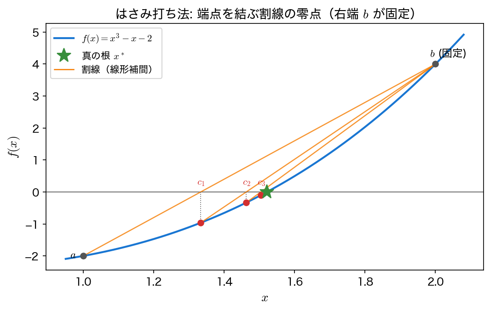
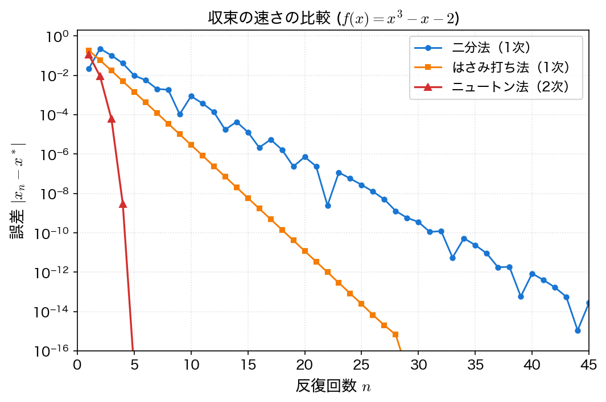

はさみ打ち法
はさみ打ち法（regula falsi method、偽位法とも）は、二分法を改良した囲い込み法の一種である。
割線法（secant method）とは別の手法である
次の近似値を「2点を通る直線の零点」で決めるという式は割線法と同じだが、使う2点の選び方が違う。はさみ打ち法は根を挟む2点（\(f\) の符号が反対の2点）を選び直すので、根は常に区間の中にある。割線法は直前の2点 \(x_{n-1},x_n\) をそのまま使うので囲い込みを捨てる代わりに速く、収束次数は黄金比 \(\approx1.618\) になる（第7回の撃ち抜き法で使う）。この違いが収束の速さをそのまま決めるので、混同してはいけない。
動機
二分法では常に区間の中点を次の近似値とするが、これは \(f(a)\) と \(f(b)\) の値の大きさを考慮していない。\(|f(a)|\) が \(|f(b)|\) に比べて非常に小さければ、根は \(a\) に近い位置にあると推測できる。はさみ打ち法はこの考え方に基づき、線形補間による内分点を用いる。
原理
区間 \([a, b]\) において \(f(a) \cdot f(b) < 0\) のとき、2点 \((a, f(a))\) と \((b, f(b))\) を結ぶ直線が \(x\) 軸と交わる点を次の近似値とする。
この交点 \(c\) は以下の式で求まる：
二分法と同様に、\(f(c)\) の符号に基づいて \(a\) または \(b\) を \(c\) で置き換え、根を含む区間を狭めていく。

アルゴリズム
入力: 関数 f, 区間 [a, b] (f(a)·f(b) < 0), 許容誤差 ε, 最大反復回数 N
出力: 近似根 c
for n = 1, 2, ..., N:
c = (a·f(b) - b·f(a)) / (f(b) - f(a))
if |f(c)| < ε:
return c
if f(a)·f(c) < 0:
b = c
else:
a = c
return c （収束しなかった場合）
収束性
はさみ打ち法の収束は 1次（線形）である。囲い込みを保つために「符号が反対のほうの端点」を残すので、\(f\) が区間内で凸性を保つ場合には一方の端点が最後まで動かない（片側収束）。固定された端点を \(b\) とすると、更新式は \(x_{n+1}=x_n-f(x_n)\dfrac{b-x_n}{f(b)-f(x_n)}\) で、\(x_n\to x^*\) の極限で
という定数比に落ち着く。\(f(x)=x^3-x-2\)、\([1,2]\) ではこの値が \(0.2888\) で、実測の誤差比も \(0.2888\) になる。二分法の \(0.5\) より小さいので二分法より速い——速さの理由はこれであって、次数が上がったからではない。
「超1次」ではない
はさみ打ち法を割線法と同一視して「収束次数は黄金比 \(1.618\)」と書いてある教科書があるが、囲い込みを保つ限りこれは誤りである。区間を挟み続ける以上、古い端点の情報を捨てられないので次数は \(1\) にとどまる。上の比が \(1\) に近い問題（\(b\) が根から遠い、あるいは \(f\) の曲がりが強い）では、二分法より遅くなることさえある。
サンプルコード
同じ例題 \(f(x) = x^3 - x - 2 = 0\) を区間 \([1, 2]\) で解く。プログラムは二分法のサンプルと同じ形で、次の近似値を作る関数 bisection_point を regula_falsi_point に差し替え、停止条件を \(|f(c)| < \varepsilon\) だけにした。表の4列目は区間幅の代わりに \(|f(c)|\) を出す。
#include <stdio.h>
#include <math.h>
/* f(x) = x^3 - x - 2 */
double f(double x)
{
return x * x * x - x - 2.0;
}
/* はさみ打ち法の次の近似値: (a, f(a)) と (b, f(b)) を結ぶ直線の零点を返す */
double regula_falsi_point(double a, double b)
{
return (a * f(b) - b * f(a)) / (f(b) - f(a));
}
int main(void)
{
double a = 1.0, b = 2.0; /* 探索区間 */
double c; /* 内分点 */
double eps = 1.0e-10; /* 許容誤差 */
int max_iter = 100; /* 最大反復回数 */
int n;
FILE *fp; /* 作図用データの出力先 */
/* f(a) と f(b) の符号が異なることを確認 */
if (f(a) * f(b) >= 0.0) {
printf("エラー: f(a) と f(b) が同符号である\n");
return 1;
}
fp = fopen("regula_falsi.dat", "w");
if (fp == NULL) {
perror("regula_falsi.dat");
return 1;
}
fprintf(fp, "# n c f(c) |f(c)|\n");
printf("%3s %20s %20s %20s\n", "n", "c", "f(c)", "|f(c)|");
for (n = 1; n <= max_iter; n++) {
c = regula_falsi_point(a, b);
printf("%3d %20.15f %20.15e %20.15e\n", n, c, f(c), fabs(f(c)));
fprintf(fp, "%d %.15e %.15e %.15e\n", n, c, f(c), fabs(f(c)));
if (fabs(f(c)) < eps) {
printf("\n近似根: %.15f\n", c);
printf("反復回数: %d\n", n);
fclose(fp);
return 0;
}
if (f(a) * f(c) < 0.0) b = c; else a = c; /* 根を含む側を残す */
}
printf("警告: 最大反復回数に達した\n");
printf("現在の近似根: %.15f\n", c);
fclose(fp);
return 0;
}
コンパイルと実行：
実行結果
n c f(c) |f(c)|
1 1.333333333333333 -9.629629629629632e-01 9.629629629629632e-01
2 1.462686567164179 -3.333388747951058e-01 3.333388747951058e-01
3 1.504019003949949 -1.018179766038907e-01 1.018179766038907e-01
4 1.516330564760263 -2.989480441927261e-02 2.989480441927261e-02
5 1.519918550023356 -8.675065850522135e-03 8.675065850522135e-03
6 1.520957481371931 -2.508805135180481e-03 2.508805135180481e-03
7 1.521257749126286 -7.248227786376127e-04 7.248227786376127e-04
8 1.521344484231523 -2.093498670612259e-04 2.093498670612259e-04
9 1.521369534537601 -6.046133253034824e-05 6.046133253034824e-05
10 1.521376769087182 -1.746113182821141e-05 1.746113182821141e-05
11 1.521378858403894 -5.042710998770517e-06 5.042710998770517e-06
12 1.521379461790157 -1.456313596603920e-06 1.456313596603920e-06
13 1.521379636045493 -4.205769619236577e-07 4.205769619236577e-07
14 1.521379686369662 -1.214607576738302e-07 1.214607576738302e-07
15 1.521379700903058 -3.507732526664142e-08 3.507732526664142e-08
16 1.521379705100238 -1.013017336681798e-08 1.013017336681798e-08
17 1.521379706312365 -2.925548692189750e-09 2.925548692189750e-09
18 1.521379706662422 -8.448859389886820e-10 8.448859389886820e-10
19 1.521379706763516 -2.439994872815987e-10 2.439994872815987e-10
20 1.521379706792712 -7.046629946216854e-11 7.046629946216854e-11
近似根: 1.521379706792712
反復回数: 20
\(f(c)\) が20回とも負のままであることに注目してほしい。\(c\) は常に根の左側にあり、右端 \(b=2\) は一度も更新されない。これが上で述べた片側収束で、図の割線がすべて同じ右端から引かれているのはこのためである。
\(|f(c)|\) の比を追うと \(0.346 \to 0.305 \to 0.294 \to 0.290 \to \cdots \to 0.2888\) となり、収束性の節で求めた定数比 \(1-\dfrac{f'(x^{*})(b-x^{*})}{f(b)} = 0.2888\) に落ち着く。\(|f(c)| \approx |f'(x^{*})|\,|c-x^{*}|\) なので、これはそのまま誤差の比である。
比が \(0.5\) の二分法（33回）より少ない20回で済んでいるが、表が一定の比で並んでいる以上これは1次収束であり、次数が上がったわけではない。ニュートン法の6回とは質的に違う。
各手法の比較
\(f(x) = x^3 - x - 2 = 0\) を許容誤差 \(10^{-10}\) で解いた場合の比較：
| 手法 | 収束の仕組み | 収束次数 | 導関数 | 特徴 |
|---|---|---|---|---|
| 二分法 | 区間の中点 | 1次 | 不要 | 確実だが遅い |
| ニュートン法 | 接線の零点 | 2次 | 必要 | 高速だが初期値依存 |
| はさみ打ち法 | 根を挟む2点の線形補間の零点 | 1次（比 \(0.2888\)） | 不要 | 二分法（比 \(0.5\)）より速いが、片側収束のため次数は上がらない |
| （参考）割線法 | 直前の2点の線形補間の零点 | \(\approx1.618\) 次 | 不要 | 囲い込みを捨てるぶん速いが、収束の保証がない |

手法の選択は問題の性質や要求される精度・効率に応じて判断する。実用的には、まず二分法やはさみ打ち法で根の近傍を特定し、その後ニュートン法で高精度の解を求めるという組み合わせも有効である。
可視化
3本のプログラムはそれぞれ bisection.dat・newton.dat・regula_falsi.dat を書き出すので、3つとも実行しておけば上の図を自分で描ける。真の根 \(x^*\) は既知ではないから、ここではもっとも精度の高いニュートン法の最終値を \(x^*\) とみなして誤差を測る。
import numpy as np
import matplotlib.pyplot as plt
bis = np.loadtxt("bisection.dat")
new = np.loadtxt("newton.dat")
reg = np.loadtxt("regula_falsi.dat")
root = new[-1, 1] # ニュートン法の最終値を x* とみなす
fig, ax = plt.subplots(figsize=(6.5, 4.5))
for data, label, marker in ((bis, "bisection", "o"),
(reg, "regula falsi", "s"),
(new, "Newton", "^")):
err = np.abs(data[:, 1] - root)
m = err > 0.0 # 誤差 0 の行は対数軸に載らない
ax.semilogy(data[m, 0], err[m], marker + "-", ms=4, label=label)
ax.set_xlabel("iteration $n$")
ax.set_ylabel("$|x_n - x^*|$")
ax.set_title("Convergence of three root finders")
ax.grid(alpha=0.3)
ax.legend()
fig.tight_layout()
fig.savefig("convergence.png", dpi=150)
plt.show()
実行:
cc -O2 -Wall -o bisection bisection.c -lm && ./bisection
cc -O2 -Wall -o newton newton.c -lm && ./newton
cc -O2 -Wall -o regula_falsi regula_falsi.c -lm && ./regula_falsi
python3 plot_convergence.py
本ページの図は講義ノート用に注釈を加えて描いたものだが、plot_convergence.py は同じ計算結果から最小限のコードで同じ中身を描く。以降の回でも、サンプルコードは計算結果を .dat に書き出し、それを読む plot_*.py を添える方式で統一する。